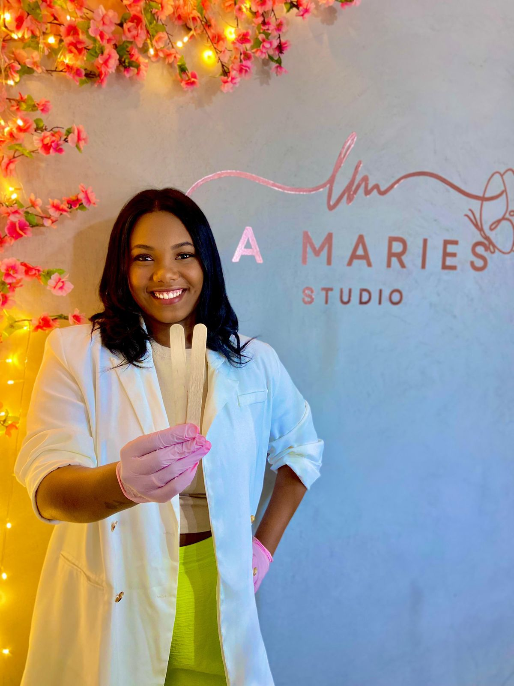

Julia Ribeiro
Especialista em Epilação
Seja Bem Vindo!
Olá, seja bem-vindo ao meu portfólio! Meu nome é Júlia Ribeiro, sou especialista em epilação e estou atuando na área há pouco tempo. Embora minha jornada tenha começado recentemente, já adquiri uma sólida base de conhecimentos e habilidades, sempre buscando oferecer o melhor atendimento e resultados de alta qualidade para meus clientes. Tenho paixão pelo que faço e me dedico a proporcionar uma experiência confortável e satisfatória para todos. Explore meu portfólio e conheça mais sobre o meu trabalho e os serviços que ofereço.
Vantagens da Epilação

A epilação remove os pelos pela raiz, proporcionando uma pele suave por mais tempo do que a depilação com lâmina. Métodos como cera ou laser fazem com que os pelos demorem mais para crescer. Com o uso contínuo, os pelos crescem mais finos e em menor quantidade. A depilação a laser pode até reduzir ou eliminar permanentemente o crescimento dos pelos. Diferente da lâmina, a epilação não corta a pele, diminuindo o risco de cortes e irritações. Métodos como cera e laser são frequentemente menos irritantes. Técnicas adequadas de epilação e cuidados pós-epilação ajudam a prevenir pelos encravados.
Diversos métodos de epilação estão disponíveis, permitindo escolher o melhor para cada tipo de pele. Além disso, a epilação permite uma remoção precisa, ideal para áreas pequenas como sobrancelhas. A epilação oferece uma aparência suave, preferida por razões estéticas e de confiança pessoal, sendo ideal para eventos especiais ou uso diário. A epilação pode ser realizada rapidamente e economiza tempo com cuidados frequentes com os pelos. Em resumo, a epilação é uma escolha popular para quem busca uma pele lisa, menos irritação e praticidade nos cuidados com os pelos.
Seal Hangouts

Guess where you can find these fantastic creatures? From the icy polar plunge zones to the sunny coastal chill spots, seals know how to pick their pads. They love lounging on rocky shores, showing off their sun-kissed fur, and occasionally doing the cha-cha-slide into the water.
Mais um Pouco do Trabalho


Meet the VIPs (Very Important Pinnipeds)! We've got the harbor seal, the grey seal, the elephant seal (yep, the one with the hilarious schnoz), and the fierce leopard seal. It's like a star-studded cast of the ocean! Each has their own quirks and skills, making them the true icons of the underwater red carpet.
Cool Facts About Seals

Dive into the world of seals, those charming sea creatures with a flair for the extraordinary. From holding their breath like underwater champs to using their whiskers for underwater GPS, these marine wonders are quite the showstoppers.
Seals rock the art of breath-holding, making any professional diver green with envy. And those whiskers? They're like nature's very own GPS, guiding these underwater explorers through their aquatic escapades.
For a deeper dive into seal awesomeness, visit sealworld.com